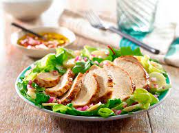

Ensalada de Pollo a la Parrilla
Ensalada de Pollo a la Parrilla

Ingredientes:
- 2 pechugas de pollo deshuesadas y sin piel
- 6 tazas de mezcla de lechugas (lechuga romana, espinacas, rúcula, etc.)
- 1 tomate grande, cortado en cubitos
- 1 aguacate maduro, cortado en rodajas
- 1/4 de taza de maíz dulce enlatado
- 1/4 de taza de frijoles negros cocidos
- 1/4 de taza de queso cheddar rallado
- Aderezo de tu elección (vinagreta balsámica, ranch, etc.)
- Sazonador para pollo (opcional)
- Aceite de oliva
- Sal y pimienta al gusto
Pasos:
- Sazona las pechugas de pollo con sal, pimienta y el sazonador para pollo si lo deseas.
- Calienta una parrilla a fuego medio-alto y cepilla con aceite de oliva para evitar que el pollo se pegue.
- Cocina las pechugas de pollo en la parrilla durante 6-8 minutos por cada lado, o hasta que estén bien cocidas y tengan marcas de parrilla.
- Retira el pollo de la parrilla y déjalo reposar durante unos minutos antes de cortarlo en tiras o cubos.
- En un tazón grande, mezcla las lechugas, el tomate, el aguacate, el maíz, los frijoles y el queso cheddar.
- Agrega las tiras de pollo a la ensalada y aliña con el aderezo de tu elección.
- Mezcla bien y sirve la ensalada de pollo a la parrilla en platos individuales.
Valor nutricional por porción:
- Calorías: Aproximadamente 350 kcal
- Proteínas: 30g
- Carbohidratos: 15g
- Grasas: 20g
- Fibra: 5g
- Vitaminas y minerales: Rico en vitamina A, vitamina C, hierro y potasio.
Ensalada de Pollo y Vegetales

Ingredientes:
- 2 pechugas de pollo deshuesadas y sin piel
- 6 tazas de mezcla de lechugas (lechuga romana, espinacas, rúcula, etc.)
- 1/2 taza de tomates cherry, cortados por la mitad
- 1/2 pepino, cortado en rodajas finas
- 1 zanahoria grande, rallada
- 1/4 de taza de almendras fileteadas, tostadas
- Aderezo de vinagreta balsámica light (opcional)
- Sazonador de hierbas al gusto
- Aceite de oliva virgen extra
- Sal y pimienta al gusto
Pasos:
- Sazona las pechugas de pollo con sal, pimienta y el sazonador de hierbas.
- Cocina las pechugas de pollo a la parrilla o a la plancha hasta que estén bien cocidas y doradas por ambos lados.
- Deja que el pollo se enfríe y luego córtalo en tiras finas o cubos.
- En un tazón grande, mezcla las lechugas, los tomates cherry, el pepino, la zanahoria rallada y las almendras tostadas.
- Agrega las tiras de pollo a la ensalada y aliña con un poco de aceite de oliva y vinagreta balsámica light si lo deseas.
- Mezcla bien todos los ingredientes y ajusta el sazón con sal y pimienta al gusto.
- Sirve la ensalada de pollo y vegetales en platos individuales y disfruta de una comida saludable y baja en calorías.
Valor nutricional por porción:
- Calorías: Aproximadamente 250 kcal
- Proteínas: 25g
- Carbohidratos: 10g
- Grasas: 12g
- Fibra: 5g
- Vitaminas y minerales: Rico en vitamina A, vitamina C, hierro y potasio.